下書きです。「次の開催」は、第1回の内容を仮に入れています。
岐阜・西柳ケ瀬の
アーケードで開く、
年に2回の市。
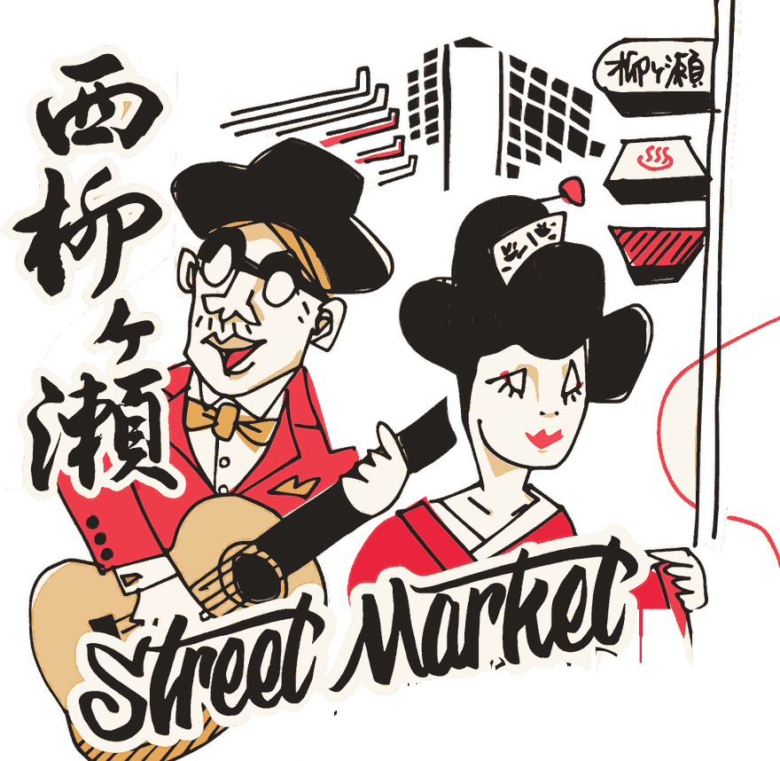
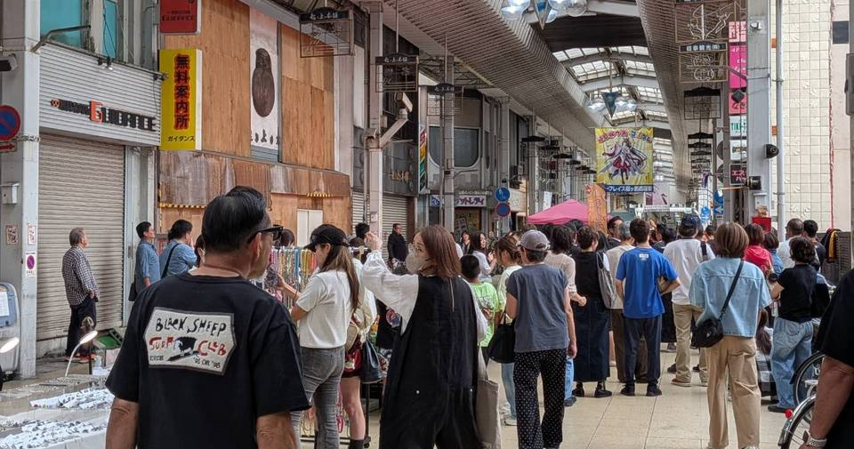
年に2回、春と秋にひらきます。
東柳ケ瀬から西柳ケ瀬へ
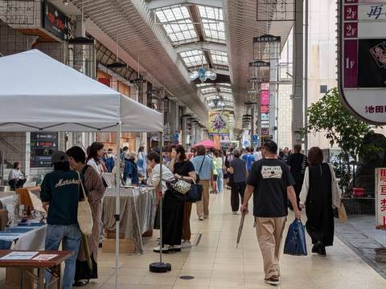
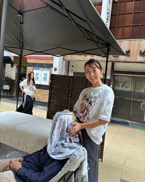
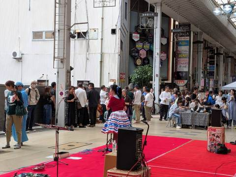
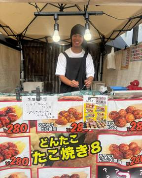
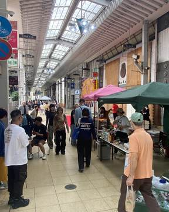
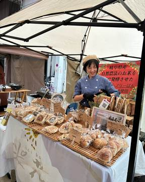
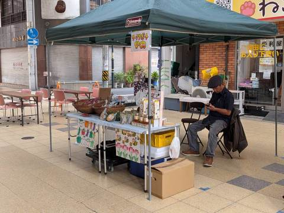
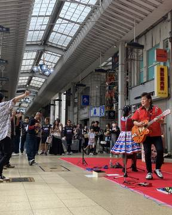
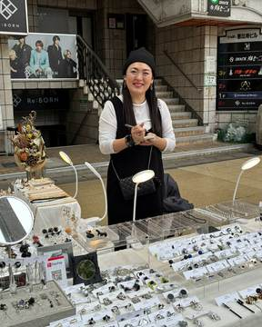
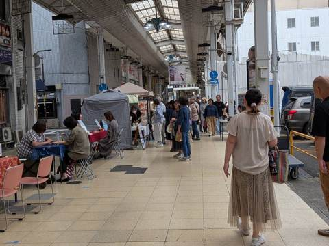
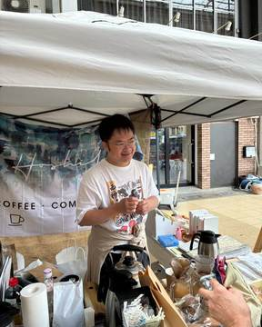
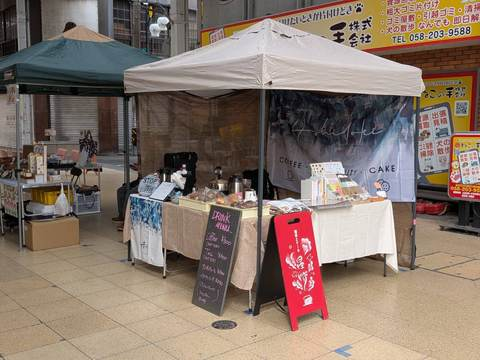
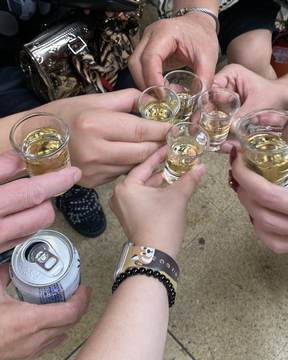
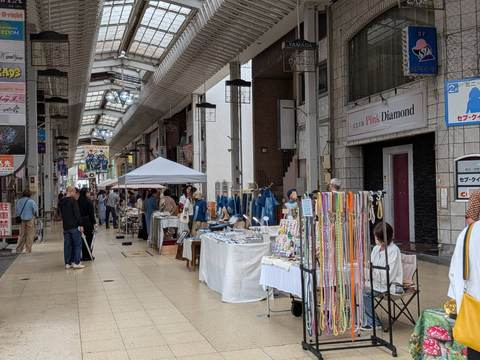
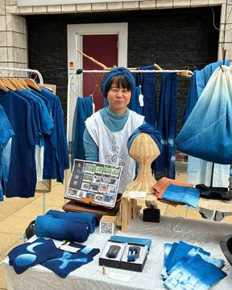
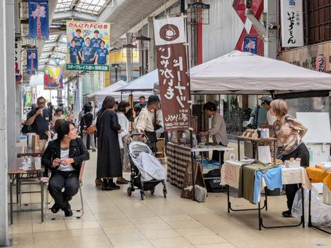
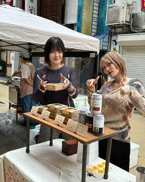
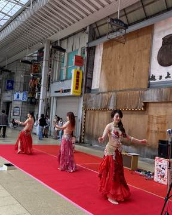
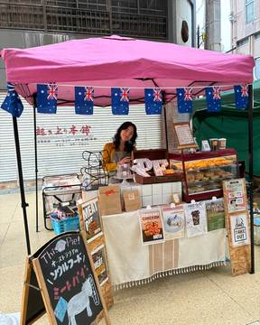
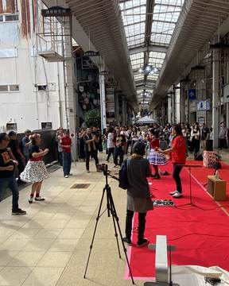
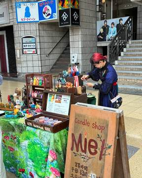
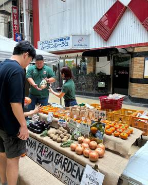
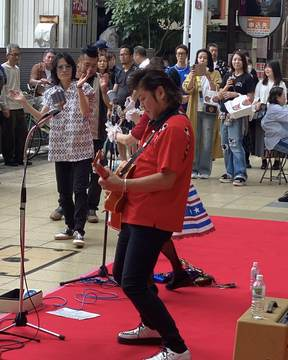
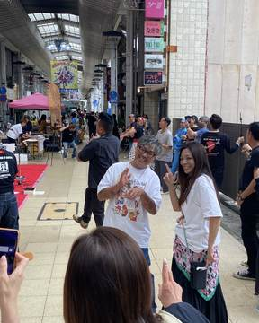
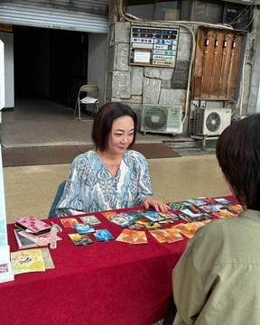
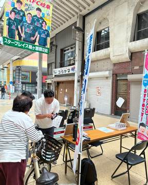
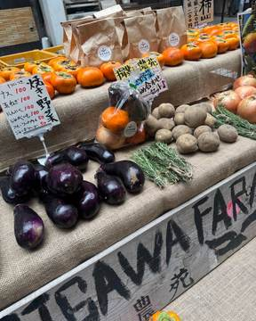
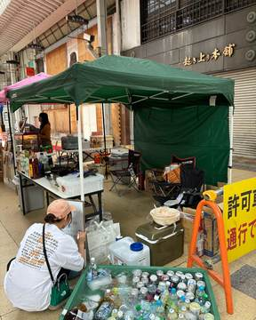
「通り過ぎる道を、歩きたくなる商店街へ」。西柳ケ瀬ストリートマーケットは、岐阜市・西柳ケ瀬のアーケードの下に、おいしいもの、手仕事、占い、そして音楽が集まる市です。
食べたり、気になるものを見つけたり、占ってもらったり。どこからか聞こえてくる音楽を楽しみながら、通りを歩いてみてください。
どなたでも、ふらっとお越しください。
ひとりでも、だれかとでも。
明治の終わりには、隣の八間道から名物の夜店を引き受け、柳ケ瀬はいっそうにぎやかになりました。昭和3年、通りにスズラン灯がともると、お店は夜更けまで開き、「柳ブラ」という言葉が生まれます。
露店が人を呼び、人が歩いて、通りができた街。
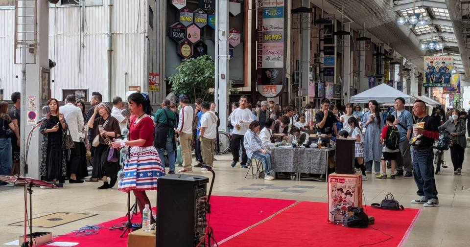